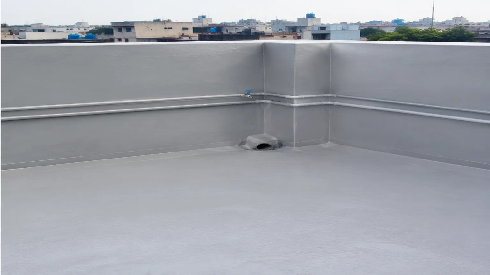
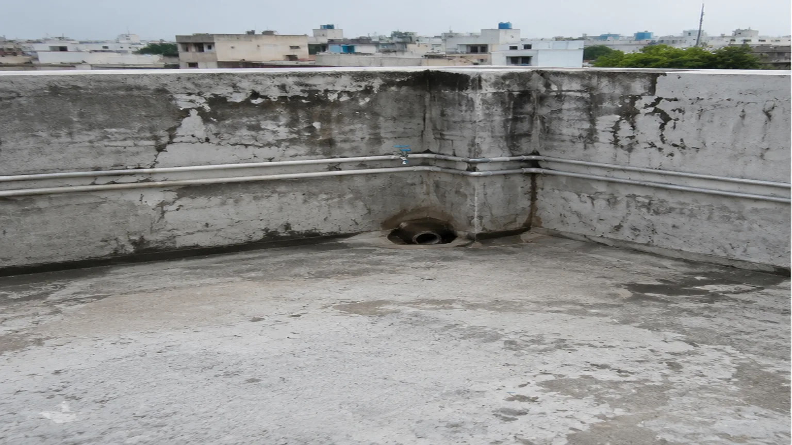

Sika QualityWorld-class products
Waterproofing & construction chemical solutions
Stronger Structures.
Leak-Free Living.
Professional waterproofing and construction chemical solutions that protect, strengthen and extend the life of your structures.
- 01 Sika Quality
- 02 Expert Team
- 03 Lasting Protection
Expert TeamTrained & certified
Lasting ProtectionEngineered to perform
End-to-end adviceFrom diagnosis to application
Start with the problem
Find your leakage problem
Choose the area you are dealing with. We’ll prepare a contextual message so your first conversation starts with useful information.
Selected areaRoof leakage
Tell us where water appears and when the issue is most visible.
Discuss this problemOur solutions
Complete Waterproofing & Repair Solutions
Professional solutions for your home, commercial property and construction project.
Product systems
High-Performance Construction Chemicals
Explore every product family. Add your requirements to the cart and request a quotation on WhatsApp.
Application guidance
See how professional systems are applied
Application quality matters as much as material selection. These manufacturer-published demonstrations introduce key steps; project conditions still require technical assessment.
See our working processBefore & after
Protection you can inspect
This illustrative comparison demonstrates the kind of surface transformation a correctly prepared waterproofing system can create. It is not presented as a client project.


Our process
From inspection to long-term protection
- 01Connect
Share your requirement on WhatsApp.
- 02Free Inspection
We inspect the site and assess the issue.
- 03Solution & Quote
You receive the best solution with clear quotation.
- 04Professional Application
Our experts apply approved systems with care.
- 05Lasting Protection
Enjoy leak-free, strong and durable results.
Why choose us
Trusted. Tested.
Recommended.
We combine global quality products with local expertise to deliver solutions that last.
Authorized Sika Agent
Genuine products. Assured performance.
Expert Application
Trained team with proven workmanship.
Quality Assurance
Tested systems that meet international standards.
On-time Delivery
Reliable service across Pakistan.
After Sales Support
We stand with you, even after completion.
Cities we serve
Protection across Pakistan
IslamabadRawalpindiLahoreKarachiPeshawarFaisalabadMultanGujranwalaSialkotAbbottabad
Sika
Building TrustAuthorized Agent
of Sika PakistanISO 9001:2015
CertifiedPremium Quality
ProductsTechnical Support
& Site GuidanceSafety & Environment
Committed
Building TrustAuthorized Agent
of Sika PakistanISO 9001:2015
CertifiedPremium Quality
ProductsTechnical Support
& Site GuidanceSafety & Environment
Committed
Technical FAQs
Questions before you begin
Clear starting points for a productive technical conversation.
Do you recommend a product before inspection?+
Some problems can be discussed from photos and history, but site condition, substrate and water path may require inspection before a system is recommended.
Can an existing waterproofing system be repaired?+
It depends on adhesion, compatibility, moisture condition and how widely the existing system has failed. The condition should be assessed first.
What information should I share on WhatsApp?+
Share the affected area, when leakage appears, approximate size, previous treatments and clear photos. Avoid sharing private documents or unrelated personal data.
Are application videos a substitute for site guidance?+
No. Videos are useful introductions. Actual surface preparation, consumption, detailing and curing must follow the selected system and site conditions.
Need Help?
Need a reliable waterproofing or construction solution?
Chat with our experts on WhatsApp. Get expert advice, a free site inspection and a solution for your project.